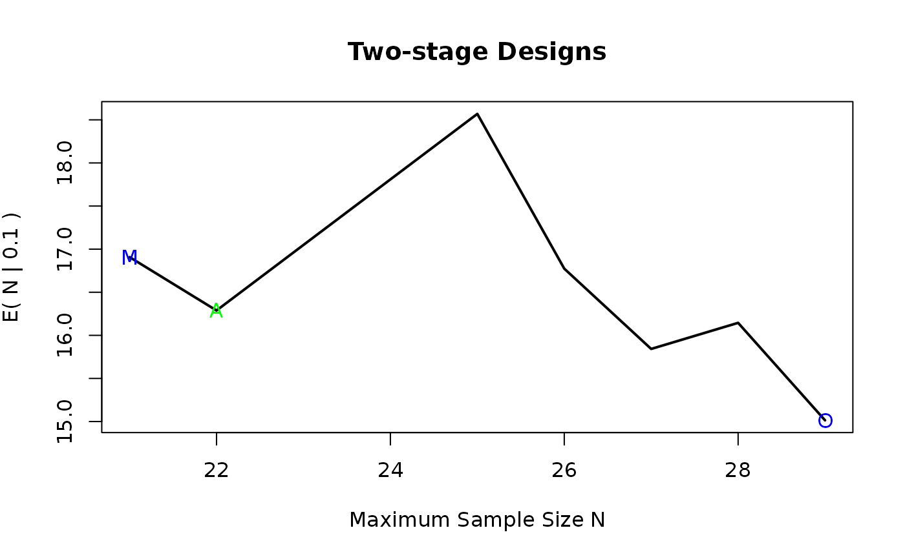

simon2stage.RdThe primary objective of a phase II clinical trial of a new drug or regimen is to determine whether it has sufficient biological activity
against the disease under study to warrant more extensive development.
This function calculates the sample size needed in a Simon 2-stage design which is a
two-stage design that is optimal in the sense that the expected sample size is minimized if the
regimen has low activity subject to constraints upon the size of the type 1 and type 2 errors.
Two-stage designs which minimize the maximum sample size are also determined.
simon2stage( p0, pa, alpha, beta, eps = 0.005, N_min, N_max, admissible = c("chull", "CHull"), method = c("speedup", "original"), ... )
| p0 | probability of the uninteresting response (null hypothesis \(H0\)) |
|---|---|
| pa | probability of the interesting response (alternative hypothesis Ha) |
| alpha | Type I error rate \(P(reject H0|H0)\) |
| beta | Type II error rate \(P(reject Ha|Ha)\) |
| eps | tolerance default value = 0.005 |
| N_min | minimum sample size value for grid search |
| N_max | maximum sample size value for grid search |
| admissible | character string indicating how to compute admissible designs, either 'chull' or 'CHull', the former uses grDevices::chull, the latter uses multichull::CHull |
| method | either 'original' or 'speedup' for the original implementation or a more speedier version |
| ... | arguments passed on to plot in case admissible is set to CHull |
a data.frame with elements
n1: total number of patients in stage1
n2: total number of patients in stage2
N: total number of patients=n1+n2
r1: critical value for the first stage
r2: critical value for the second stage
eff: (r2 + 1)/N
90
90
EN.p0: expected sample size under H0
PET.p0: probability of terminating the trial at the end of the first stage under H0
MIN: column indicating if the design is the minimal design
OPT: column indicating if the setting is the optimal design
ADMISS: column indicating if the setting is the admissible design
alpha: the actual alpha value which is smaller than alpha_param + eps
beta: the actual beta value where which is smaller than beta_param + eps
p0: your provided p0 value
pa: your provided pa value
alpha_param: your provided alpha value
beta_param: your provided beta value
if x1<=r1 --> stop futility
if (x1+x2)<=r --> futility
if (x1+x2)> s --> efficacy
Simon R. Optimal two-stage designs for phase II clinical trials. Control Clin Trials. 1989;10(1):1-10. doi:10.1016/0197-2456(89)90015-9
samplesize <- simon2stage(p0 = 0.1, pa = 0.3, alpha = 0.05, beta = 0.2, eps = 0.005, N_min = 0, N_max = 50) plot(samplesize)# \donttest{ if(require(multichull, quietly = TRUE)){ library(multichull) simon2stage(p0 = 0.1, pa = 0.3, alpha = 0.05, beta = 0.2, eps = 0.005, N_min = 0, N_max = 200, admissible = "CHull") }#> #>#> #> #>#> #> #>#> #>#> #> #>#> #> #>#> #> #>#> #> #>#> [1] "WARNING: Check whether input parameter 'bound' is specified correctly"# } # \donttest{ ## Example 1 test <- data.frame(p0 = c(0.05, 0.1, 0.2, 0.3, 0.4, 0.5, 0.6, 0.7), pa = c(0.05, 0.1, 0.2, 0.3, 0.4, 0.5, 0.6, 0.7) + 0.2) test <- merge(test, data.frame(alpha = c(0.1, 0.05, 0.05), beta = c(0.1, 0.2, 0.1))) samplesize <- fleming1stage(p0 = test$p0, pa = test$pa, alpha = test$alpha, beta = test$beta) samplesize <- simon2stage(p0 = test$p0, pa = test$pa, alpha = test$alpha, beta = test$beta, N_min = 10, N_max = samplesize$n + 15) optimal_minimax <- lapply(samplesize, FUN=function(x){ cbind(subset(x, OPT == "Optimal", c("r1","n1","r2","N","EN.p0","PET.p0")), subset(x, MIN == "Minimax", c("r1","n1","r2","N","EN.p0","PET.p0"))) }) optimal_minimax <- data.table::rbindlist(optimal_minimax) ## Example 2 test <- data.frame(p0 = c(0.05, 0.1, 0.2, 0.3, 0.4, 0.5, 0.6, 0.7), pa = c(0.05, 0.1, 0.2, 0.3, 0.4, 0.5, 0.6, 0.7) + 0.15) test <- merge(test, data.frame(alpha = c(0.1, 0.05, 0.05), beta = c(0.1, 0.2, 0.1))) samplesize <- fleming1stage(p0 = test$p0, pa = test$pa, alpha = test$alpha, beta = test$beta) samplesize <- simon2stage(p0 = test$p0, pa = test$pa, alpha = test$alpha, beta = test$beta, N_min = 25, N_max = samplesize$n + 20) optimal_minimax <- lapply(samplesize, FUN=function(x){ cbind(subset(x, OPT == "Optimal", c("r1","n1","r2","N","EN.p0","PET.p0")), subset(x, MIN == "Minimax", c("r1","n1","r2","N","EN.p0","PET.p0"))) }) optimal_minimax <- data.table::rbindlist(optimal_minimax) # }